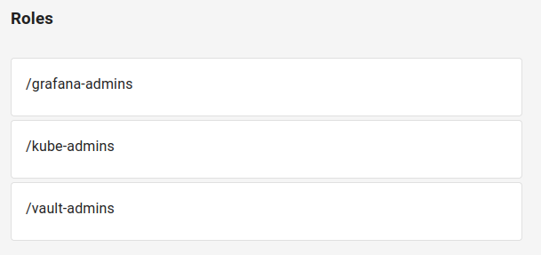
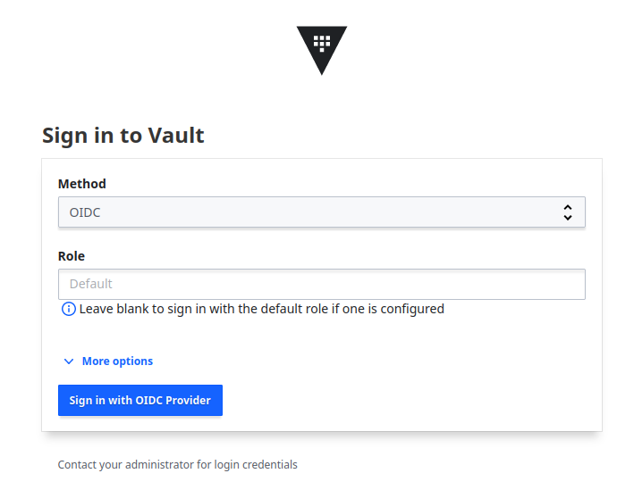
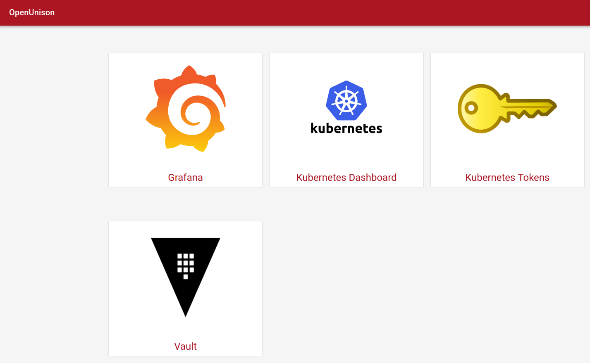

Hashicorp Vault
HashiCorp Vault is an identity-based secrets and encryption management system. It supports OpenID Connect for authentication. In this example Vault will be integrated with OpenUnison using Trust.
Prerequisites
This example assumes the following setup:
- Keycloak
v23.0.4— identity provider - Openunison operator
v1.0.39 - Orchestra
v1.0.39 - Orchestra-login-portal
v1.0.39 - Hashicorp Vault
v1.15.2
Everything is deployed inside of kubernetes cluster v1.27.3 using official Helm charts.
Trust creation
In order to trust Vault an Openunison Trust custom resource has to be created. It will look like similar to this one:
apiVersion: openunison.tremolo.io/v1
kind: Trust
metadata:
labels:
app.kubernetes.io/name: openunison
app.kubernetes.io/instance: openunison-orchestra
app.kubernetes.io/component: vault-sso
app.kubernetes.io/part-of: openunison
name: vault
namespace: openunison
spec:
accessTokenSkewMillis: 120000
accessTokenTimeToLive: 60000
authChainName: login-service
clientId: vault # this is your vault client id
clientSecret:
keyName: vault
secretName: orchestra-secrets-source
codeLastMileKeyName: lastmile-oidc
codeTokenSkewMilis: 60000
publicEndpoint: true
redirectURI:
- https://vault.example.com/ui/vault/auth/oidc/oidc/callback
- https://vault.example.com/oidc/oidc/callback
signedUserInfo: false
verifyRedirect: true
Note: secret orchestra-secrets-source must contain vault key with client secret.
Deploy this CR using any method suitable for you: kubectl, argo cd etc.
Vault configuration
Vault has not only to trust Openunison but also map roles from Openunison to roles inside Vault. That requires several configuration steps.
Enable OIDC auth method
Vault cli will be used for Vault configuration.
Enable OIDC:
Set up default oidc role:
vault write auth/oidc/role/default \
bound_audiences="vault" \
allowed_redirect_uris="https://vault.example.com/ui/vault/auth/oidc/oidc/callback" \
allowed_redirect_uris="https://vault.example.com/oidc/oidc/callback" \
user_claim="name" \
role_type="oidc" \
groups_claim="groups"
Note: bound_audiences value must be the same as clientId in Trust. Values of allowed_redirect_uris must also match with redirectURI in Trust.
Configure the OIDC auth method
Set these options for oidc config:
vault write auth/oidc/config \
oidc_discovery_url="https://k8sou.example.com/auth/idp/k8sIdp" \
oidc_client_id="vault" \
oidc_client_secret="<vault client secret>" \
default_role=default
Let's explain the options:
oidc_discovery_url — hostname of your Openunison instance
oidc_client_id — vault client id; must be the same as clientId in Trust
oidc_client_secret — vault client secret; must match with the value of the vault key in orchestra-secrets-source secret
default_role — default vault role; must match with the oidc role configured earlier
Create required policies
Vault provides a fine-grained control over secrets using policies. Set up policies according to your needs. In this example only one policy will be created:
tee admin.hcl <<EOF
path "*" {
capabilities = ["create", "read", "update", "delete", "list", "sudo"]
}
EOF
vault policy write admin ./admin.hcl
This policy gives admin permissions in the entire Vault instance. Use at your own risk!
Create required groups
Number of groups must match with the number of policies set up. In this example only one group is requred:
Note: policies value must match with policy name created earlier.
Create required group aliases
vault write identity/group-alias \
name=/vault-admins \
mount_accessor=<oidc auth accessor> \
canonical_id=<admin group id>
Let's explain the options:
name — name of the alias; must match with role name inside of Openunison
mount_accessor — accessor value which corresponds to oidc auth method
canonical_id — id of the group created earlier
How to get mount_accessor value:
vault auth list
Path Type Accessor Description Version
---- ---- -------- ----------- -------
oidc/ oidc auth_oidc_xxxxxxxx n/a n/a
How to get canonical_id value:
When Openunison is integrated with Keycloak groups from Keycloak appear in Openunison with slashes:

These slashes must be added to the alias name:
When Vault configuration is complete you can check if integration is working. For that go to vault login page and select OIDC method:

Create portal badge
To add a portal badge to OpenUnison, customize the below yaml to point to your Vault and update for where you want it displayed on your portal and who can see the badge:
apiVersion: openunison.tremolo.io/v1
kind: PortalUrl
metadata:
labels:
openunison.io/instance: orchestra
name: vault
namespace: openunison
spec:
label: Vault
org: B158BD40-0C1B-11E3-8FFD-0800200C9A66
url: https://vault.example.com/
icon: iVBORw0KGgoAAAANSUhEUgAAANIAAADwCAYAAAB1/Tp/AAABhGlDQ1BJQ0MgcHJvZmlsZQAAKJF9kT1Iw1AUhU/TiiIVBztIcQhSnSyIijhqFYpQIdQKrTqYvPQPmjQkKS6OgmvBwZ/FqoOLs64OroIg+APi7OCk6CIl3pcUWsR44fE+zrvn8N59gNCoMM0KjQOabpvpZELM5lbF7lcEEEUIMQzLzDLmJCkF3/q6p26quzjP8u/7s/rUvMWAgEg8ywzTJt4gnt60Dc77xBFWklXic+Ixky5I/Mh1xeM3zkWXBZ4ZMTPpeeIIsVjsYKWDWcnUiKeIY6qmU76Q9VjlvMVZq9RY6578heG8vrLMdVpDSGIRS5AgQkENZVRgI067ToqFNJ0nfPxR1y+RSyFXGYwcC6hCg+z6wf/g92ytwuSElxROAF0vjvMxAnTvAs2643wfO07zBAg+A1d6219tADOfpNfbWuwI6N8GLq7bmrIHXO4Ag0+GbMquFKQlFArA+xl9Uw4YuAV617y5tc5x+gBkaFapG+DgEBgtUva6z7t7Ouf2b09rfj9wiHKm5T7rWQAAAAZiS0dEAP8A/wD/oL2nkwAAAAlwSFlzAAAN1wAADdcBQiibeAAAAAd0SU1FB+gBGgQpIqIo29cAABFdSURBVHja7Z1bbF1Vesd/59ixw6RJgHESI5ICEgN0JKBoaCECpTPSpAVFbSUGNFR9GNGqnb4UjQYNKk99pAVFXB6C2gqGAAOBBBgKySQmgGPolDQEciGJcW5O7CSOEzu+xLHPdffh2w4cbJ9zHPvsvfbe/590FOnk7O2911r/df0uIIQQQgghhBBCCCGEEEIIIYQQQgghhBBCCCGEEEIIIYQQQgghhBBCCCGEEEIIIURiSdXonvOBOSpe4SA5YBjwXBdSI/AS8OPZflghZqG9vw/8DMjM5o3ra/CweeAt4L4a3V+ImbbN/GzfOF2Dhy0AnwA7VW/CMT7z22YhCkIC6ANeB4qqO+EIRWCd3zaJipDGgFagXfUnHGG/3yYzURISwCFgi0Yl4chotMVvk0RNSMPYDskJ1aMImS6/LY5EUUgA24EdGpVEiBSA//PbIlEVUj/wHjCo+hQhMQi8CwxEWUgAm4AOdDgrwlkbtQOba/2HghDSaewQLKd6FQGTB94AzsRBSADrgeOqVxEwR/xOnLgI6RiwQfUqAuZ1Ato1DkpInv9SPapbERBdfuftxU1Ih7DdEyGC4LfA0bgJCeCCP189pzoWNaYXeAcYDeoPBimkIrAH2KZ6FjXmI2AvARoCpAN+wdPYudKw6lrUiAHgd8DZIP9o0EIqAB8DX6q+RY3YBbQRsFlaOoQX7fCnd2OqczHLjAAfAJ1B/+EwhFTEdlROqt7FLNPtty0vCUICc/n9X2rgOy8SSxb4EHPgIylCKmCRhrTpIGaLYWAtIbnspEN88TZ/ZJJVuJgpnj8afRHWA4QppAzwX8gqXMSgLYUppPFeZJfagZgh28Ke3aRDLoBQ57UiFuSBl8Neb4ctpCy276+wXeJS2YEDO8BpBwriBCHt/YvIU8CMU0M/k3RBSOeBrZjznxDToR0L+jgmIRm7sZjMWiuJ6YxGbThit+mKkPqxSC99ah+iSnowT4IRCamUDzDzDo1KoprRaBfmSYCENLGHeQ9ZhYvKXMAiUw1KSJPzJha2Szt4Yio84Ct/WoeENDlHse1MCUlMRRF4hQCCPkZZSAC/wVzShZiMw35ni4RUng4UtkuU72idSxXkYrLkHPAa8FNgYRRr+tFHH+XBBx+kWJx6AzKXy7FhwwZWr1598bubb76Zxx9/nObm5rL37+np4bHHHmPv3r0Xv3vkkUe4//77mTNnztS9ZjrNunXreOKJJ6Iqoi6/k81LSNXNgfdh2+H3RbG2r732Wm677bayv8nn8+zYsaPku4ULF3LrrbeydOnSstd2d3ezcGFpH3PNNddw++23U19fvko//fTTKI9G/43F83ZuDZ12tMDOAW/jyGHbdPG8yvVcLBYn/M7zvLKj2GxcW82zOcppLMyWk17Vrgopj2VY+0xLAuHze2Anjh7Ypx0uuKOYMasOaMU5oAWHd3NdFlLeL7wjakeJ56DfFjwJ6dL4HHPaUlyH5HIB2OJ6h+q6kMZTF/arPSWWs1huLSSkmdHqj0yyCk8eecy9pl1CmjlZ4Ndo0yGp07oXMLcJp6mPSIFuwTwh/zQS3Wg+T6FQoFCYuv6z2eyE//c8j1wuRy6Xm/K8J5VKTfr/hUKBbDZb9rnq6urI5yMVJXoLlucICWl2e6YfAHWuP+yBAwdoaWmpaCK0f39pmOq+vj7a2tpYvHhx2fv39vbS11fqTLx//362bt1a0UTowIEDURFRxq/zSMxEUhHqna7BfFC+7/qDXnHFFSxatKisFYHneZw9e5aBgYGSEWPZsmU0NDSUHZGy2SxdXV0lI9rll19OU1MTqdTUVZpKpThz5gznzkUi++gW4GfIE2DW+Q7wr9hZgj7x/mSBvwPmRKVxpiMkpPHzhE71KbFnJxE7P0xHrIA7gPfVzmJNJC1a6iNWyP1+If8VsMTVh2xubuaqq64q+5tiscjp06fp6en5ujLq67nhhhtobGwsvwrPZOjo6CjZgWtubmbJkiWk0+X7xlOnTpX8TQc57HeWGQmptvwPlgfnL1zdLFm1ahWrVq0qu9mQy+XYvHkzL7744sXvrrvuOh5++GEWLVpU9v5nzpxh9erVHDx48OJ39957L/fcc09Zf6RUKsXGjRt5/vnnXR6NPsUO4EUA/AIYcnWxvGbNGq8S2WzWe+aZZ0quu/vuu72urq6K1x47dsy76667Sq599tlnvWw2W/HaNWvWuLzJ0OPPNiJHOqJCegdzs3DSGrga5znP8yb9XbXXVnu/S7l/SBSBPcBHElJwHMW8JZXMOT5ksDBbwxJSsLwM9Kr9xYYDOBb0MSlC+irKBS8m8CIRdpeJspAKWNrMQbXByDPeKRYlpBDW9JhFuA5oo8/rOJB1L6lCAsv29xowqrYYWY5hzntjElK407vPsVBNIpq0YB6wnoQULieAjUTMpEQA5iLRAgxE/UXqY1AZOWAbtn36xy48UGtrK+l0uqxjXz6f5+OPSxPOdXV1sXbtWq688sqy9+/r66Orq6vku7a2NqvQMiZC6XSa1tZWl+ruC8zkK/JpfFLEgznAauCfcMCHZd68eRNic38bz/MYGhpiZGSkpKE3NTVVjN+dy+U4e/ZsiZXCvHnzWLBgQVnHPoDBwcGSvxkig5h/2TMamN1iJV9n+9PH/c8e4Lq4NL50jITU5m88FNSnOE/GX9d2xuWF6mNWOa8CPwIWhDpfTqUqTs/Gs0d8ex1VX19fcXpWLBYnRCBKpVLU1dVVvLZQKFSVtaLGnMNMvDwJyU02AfuBO8Jc/91yyy3cdNNNFRt0R0cHe/bsufjdggULWLFiBfPmzSt77fnz52lra2N4+Gv7zqamJlasWFFRwMeOHWPXrl2MjYV2bONheY4OamB2e/PkH7HgGaHN/59++mkvk8l4o6OjU34GBwe9J598suS65cuXex0dHWWvGx0d9drb273ly5eXXLty5Uqvv7+/7HWZTMZ79dVXvRtvvDHMtdEwcGeMNrpiOSKN93a/AP4orIeYM2cODQ0N5Ren6fSEGHR1dXXMnTuXuXPnlr22sbFxgkt5Op2u6tqGhoaK7ug1ZqM/a4hV5vo08WMA82sR7jHm181I3F4sjkIa3xE6rnbrHNuA3cRwZzWOQvIwQ8h31G6dIutPu3vi+HLpmFbaABZMUuFu3WE38AkxTRqXjnHFySrcrdFoGxHIcyQhTeQU5vQnD9rw6Qbe8wUlIUWQLZgbs6e2HBp5YAcW+BEJKZocIYTwt5XMdMZ/M9nvqrl2snOgVCpV1flQNfefZYYxL+ZY+4vVE39eA/4WuDawOeWpUxw8eLCsTVs2m50Qg3tkZIRDhw5VdHM4ceLEhN8MDw/T3t5e9kA2lUrR3d0dpHmQ528yfBj3RpYEIe33R6W/D2oEbmlp4eTJ8rE8CoUC+/btK/mus7OT5557jvnz55e9dmhoiM7OzpLvDh8+zFNPPVXR1u7IkSOcPh3YZmYey/87jIgFd2Ix0+QHFOzncxzOGqI10vTZA2xVfxI4a4lw0EcJaSIZv1IVtis4vsICm+QlpPgwHrbrE7XvwHgb6CIhRw/1CarYs8AG4M+ABhcfsLm5mQceeKBi4JSBgQHWr18f5KbBdDmGbfCMJKVxJUlIOSzB727gT1x8wGXLlvHQQw9x9dVXT5nHKJVKcfz4cbZv3+6ykD4GdpGgg/AkCQksmfMHwG0uvntjYyNNTU0sXry47O9GR0crOg6GSC9mUdKfpIaVTpiQMv4CuDPKL+Fw1j0ww9TE7ZAmTUj407vPULa/WjAMvEtMfY4kpFLGgDeRVXgt6AHeSOKLpxNa4ZuJQQYEx8gBb2Fb3hJSQjgPvIQyWMwmg9ihtychJYu3sOzoQuUpIc2wB31J07tZG+HXJnmET7KQxuf03VF78BCc8yqxiYR7IteTbE4B64FfuvAw2WyW/v5+LrvssrK/6+vrI5t1JvzBKGZ6NZDkhpRKuJBSwA+BdcDi0Hu1+nquv/76ilYLmUyGw4cPk887cRS2Ffg55tYvEswSLB2MHPGm/xkFfqWZTbLXSOOcxmzDBlQU0+YrzHYxLyEJMGvl3SqG6S3psETKe1QUEtI4R/ye9YKKomrO+JsMslmUkEqI5FZ4SBSwoI8KCS0hTWAfFn9NPWxlxrAwWzKxEpNyhz9l0Y5c+c82Qk54rRHJbb4APlIxlKUIPI+ZBQkxKSngz7GgHRp5Jv/sBJaqqWhEKsd4Q1HYrql51Z/+CgmpLEPAb7TpMCnt/oZMVkUhIVUiB2z3RyZRyibgIHI9kZCq5BiWGb2oorjIcezQWpsMElLVjAGtWBw8YSPQDiwCk5CQpsVOv+EUVBT0+9O6cyoKCWm6XMASCPdqNOKwXxZCQrok3gcOJHytNIbZIfaqOUhIl8ow8DrJtgrvxfLwCglpRryJ7eIlkSLmhn9CzUBCminngJdJ5qZDkt9dQlKvrNFYQnJ3nbBO60MhIc2M8QwWSTLW3ALsR9YdEtIs4mFxHTYm5H1H0BmahFQj+rDT/SSE7foMs+rQaCQh1WRU2oFZhsd9GtsKHFKVS0i1ohML0Xs+5u/4nkYjCanWbCa+ca5zWIitL1TNElKt+RKLohNHL9EB4BV0ACsC4k4sJUycgpoUsYzkjapeERT1WPbuAvHKLPGXqloRNCv9TYc4BX28QtWqNVLQbCc+sa894AXMLEhISIEy4je+OCzMP8dS2ygEmYQUOAXs9H9HDN5lg795IiSkUDjtN8Iox3lrxywZRlWdElJYjPlTov0RXhu1YilthIQUKvuwDBZRHJVOYu4S2mSQkEJnBGghetn+PGCvPyIJCckJtmHJnKNk6DkIvI2yuUtIDjEE/Nb/NyqjUZcvJCEhOcXbmAtCFNZKOSzP0VlVm3CRR7EExa6bA3UBf6jqEq6yFAtf5bqQ/g1oUHVpaucqUQjv24eFFsupuoSrpIBbfEG5Ohr9J3C5qkojkst4WGa7dxx9viH/2YZUVRKS6wxhaVAGHXy2D4neeZeElFCKWFyHNsee6zxmgaHMEhJSZOjGbNhGHHqmL4muTaCElOC10ke4Y1U9hpkxtatqJKSoccCf3o058CwnMb8pISLJHXxtNhTWJwesVacpokwdZtOWD1FI54AfqipE1FmJbYWHJaR3gbmqBhF1voPt4IUhogzw15jFhRCRJgXc769VghZSK7BYVSDiQjMWuitIERWAf0BW3oGgnZxg6MeyPATJF8AnxDNrhoSUULJY2K69Af09D0vT2amil5DixmG/cQfBIcxAVUEfJaTYMeI37lqPEkXgUyyhspCQYsl2/1NLw9Fe7OzovIpbQoorg8DvMHfvWo1GHZi7hBCx5rtYXqUis7/lfR74uYpYJIVf+Wum2RZSO7BIxSuSwlLg6CyLKA/8i6brIknUYbHlZjOZcxdwnYpWJI3vA2dmUUj/DlymYhVJYx7wH7Mkol7MiVBW3iJxpIEfYeG7ZiqkF4AmFWm4lSnCoYjtsr0/w/sMYKZHfSpSCSmpjFshXJjBPcYzqyvMloSUWAqYXdzOS7z+PPABlgFDSEiJpgOLgTfdsF0eZuW9SUUoIQlbK228hFEli7mSH1ARCmHUAb/2xVHtTl038AMVnRCl/BjL6VptPIZXfAEKIb7BXMzFohqr8CEU9FGIKfmJv+lQTdDHP1BxCTE536Vy2K4scJ+mdUJMTT0Wi65S0MelKiohyvM9YA9T+xz9Mwr66Bw6R3KPE0ydy2gvCvooIYmquOBP34586/sCFs5LWfeEqJLLsQPab07rjmApYoQQ0+BvgJ5vrI3WYylihBDTYLE/lStiFg8/VZEIcWn8Egsq+XtgvopDiEtjKbAbBX10Hp2Ou82wP7V7g+n7KwkhvkEjig4khBBCCCGEEEIIIYQQQgghhBBCCCGEEEIIIYQQQgghhBBCCCGEEEIIIYQQQgghhHCX/wcPkhtoi3lSrQAAAABJRU5ErkJggg==
azRules:
- constraint: o=Tremolo
scope: dn
The end result should look like this:

Troubleshooting
When set up for the first time Vault may throw an error that OIDC provider didn't send back required data. Orchestra container in its turn complains that Trust 'vault' not found in logs. If you experience just the same try restarting orchestra pod. Restart of the orchestra pod also helps when portal badge does not appear on the portal page.